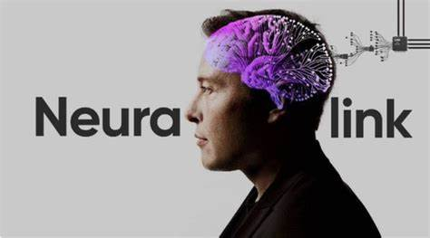

Is solar the future?
October 3, 2024 by John
The sun is the biggest source of energy in our solar system producing ---- amount of energy everyday.
On earth the global estimated consumtion of energy is ----- , this is been suplied by a ratio of
sources:
list each soucre and the percentage. Scientists estimate that with our current technology we can
harrness 38% of the sun's energy at most in a day;
this is still plenty times more than our regular consumtion. So why don't we used the free and
endless energy of the sun?
Some argue that in order to achieve those numbers you'll need to cover every land mass with solar
planels, take into account the changes in seasons,
night and day consumtion, how we plan on storing this energy and the cost to implement such a system
globally.
And to the answer to that is yes, we already have been using these strategies.
SAO in real life!
September 31, 2024 by John
Sword Art Online (SAO), a popular anime, imagines a future where players are fully immersed in a
virtual reality (VR) world,
experiencing the game as if they were physically there. While SAO is fictional, technologies like
Neuralink are bringing us
closer to this reality.
Neuralink, founded by Elon Musk, is developing brain-computer interfaces (BCIs) that could allow
humans to control digital devices
directly with their minds. By implanting tiny electrodes in the brain, Neuralink aims to create a
seamless connection between the
brain and technology. This could lead to immersive VR experiences, similar to those portrayed in
SAO, where users might explore
virtual worlds using only their thoughts.
Although the technology is still in its early stages, the combination of BCIs and VR could
revolutionize gaming, communication,
and even healthcare. The line between the virtual and real worlds may soon blur, bringing SAO-like
experiences closer to reality.